A Approved mark (D-071)
Two blobs, one drawing at two sizes. Sepia tile. Baseline.


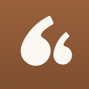
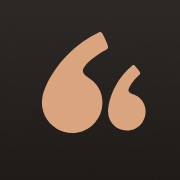
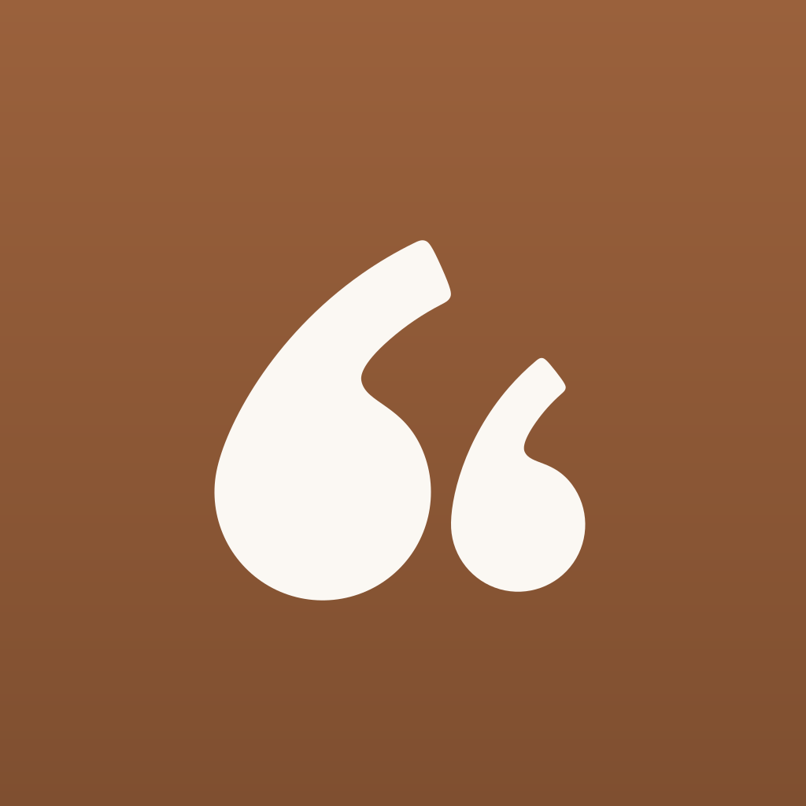
B Two tones
Parent blob in ink or paper, child blob in the sepia accent. Dark tile.


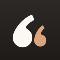
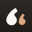
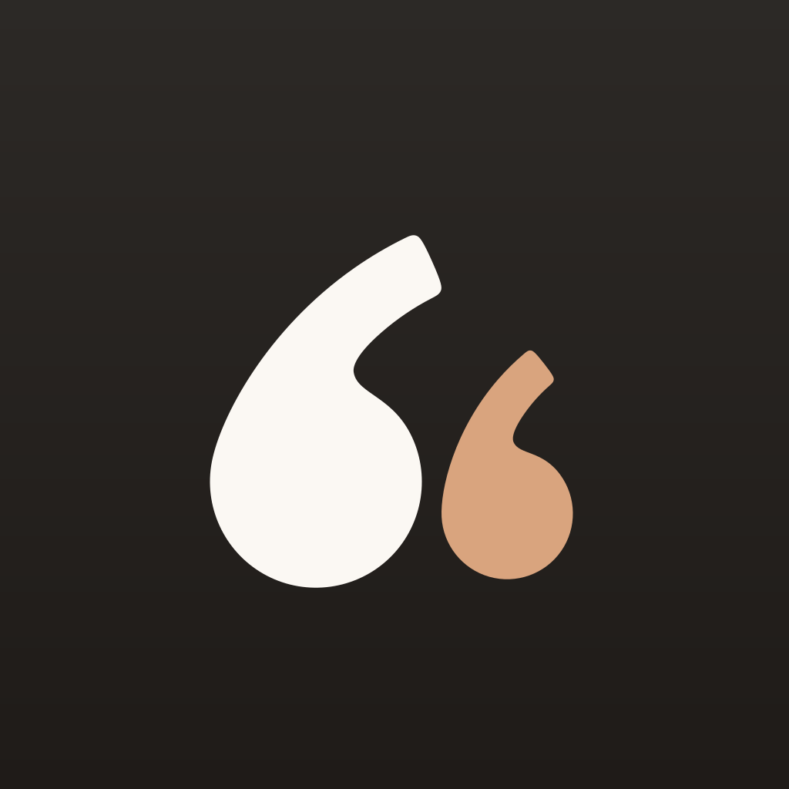
C The name in quotation marks
Same mark before the wordmark and turned half a turn after it. Icon stays as A.
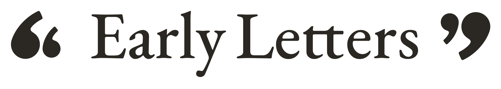
Sign up
Sign up
D Paper tile, one colour
Single deep sepia mark on a paper tile. Quietest of the set.
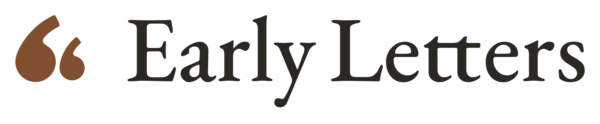
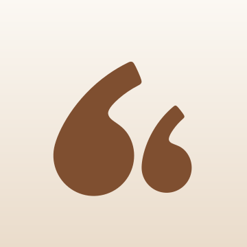
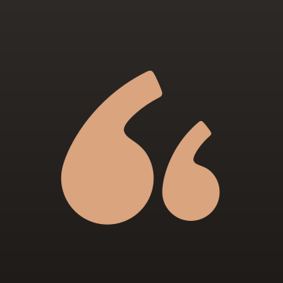
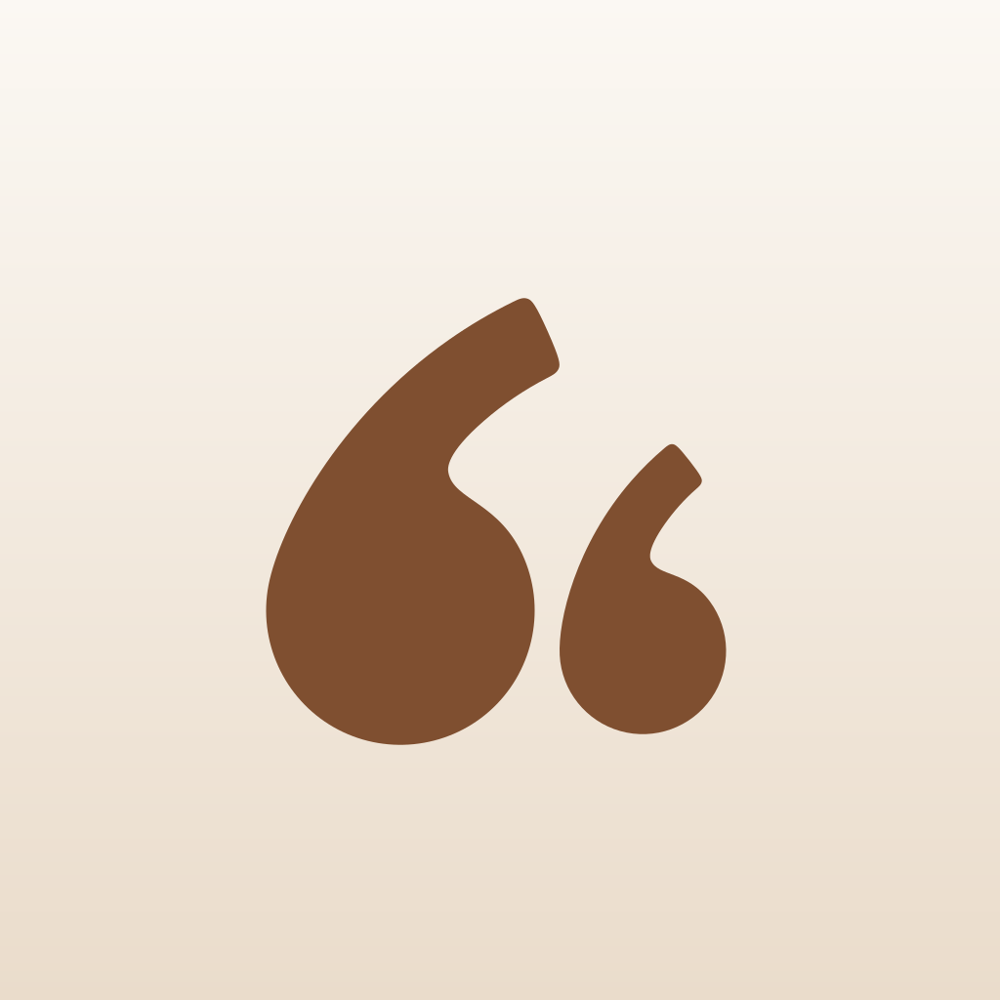
Sign up
Sign up